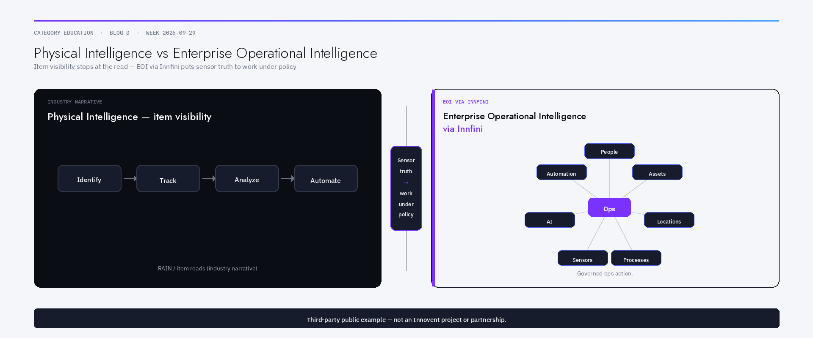
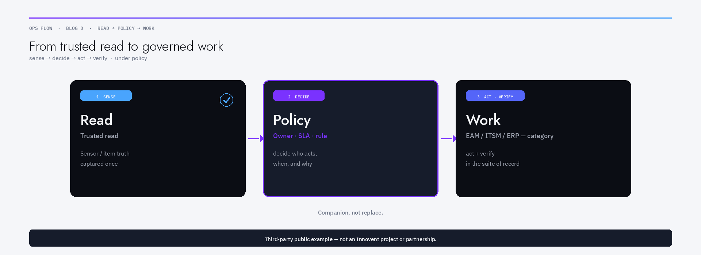
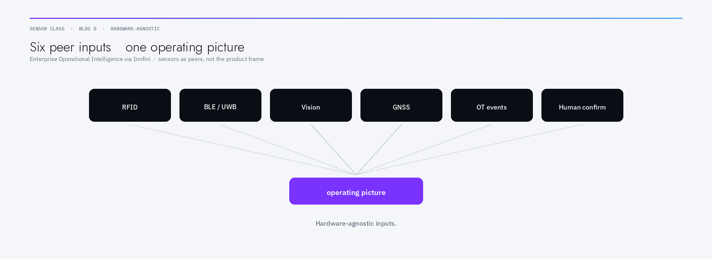

Opening
Enterprise AI is getting better at optimising plans. It is still only as honest as the physical facts it is fed.
When item identity, location, and movement are invisible or delayed, models invent a world that looks coherent in a dashboard and fails on the floor. That is not a model failure first. It is a sensing and trust failure — and then an ops-action failure if trusted reads never become today’s work under policy.
In late September 2026, the RAIN RFID market’s most visible vendor publicly framed that sensing gap as Physical Intelligence: real-time item data that links the physical world to AI-powered digital systems, along an Identify → Track → Analyze → Automate path, with Gen2X-enhanced RAIN RFID as foundation. Impinj’s public line is blunt and useful as industry language: AI cannot optimise what it cannot see; without trusted real-world item data, enterprise AI is guessing. (Attributed third-party: Impinj Physical Intelligence page; Label & Narrow Web / Chris Diorio, 22 Sep 2026.) Third-party public example — not an Innovent project or partnership. This article does not claim Innovent ships Impinj products, Gen2X, or Physical Intelligence, or partners with Impinj.
That framing matters. Buyers will hear it in competitive conversations. It is also incomplete as an operating strategy if it stops at the read.
This article is category education for the Physical AI / sensor-truth track. It distinguishes Physical Intelligence (item visibility and RAIN-upstack narrative) from Enterprise Operational Intelligence via Innfini (ops action across people, assets, locations, and processes under policy). Sensors — including RAIN RFID — are one input class among many. The useful outcome is governed work that can sit beside Maximo-, ServiceNow-, SAP-, and Oracle-class systems buyers already run — not a claim to replace those suites, and not a claim to replace any RFID vendor’s stack.

What “Physical Intelligence” is saying (and why it resonates)
Strip the logo. The underlying industry argument is sound:
- Identify — know what the item is.
- Track — know when and where it moves.
- Analyze — turn those facts into decisions.
- Automate — improve outcomes continuously.
Enterprises that move, store, maintain, or sell physical things already know the pain: stolen product, missed truck loads, approaching expiry, counterfeit or grey-market goods, stock-outs that only appear when a customer asks. Manual scans and weekend inventory projects do not keep AI honest at the speed of business.
RAIN RFID — and enhancements such as Gen2X that vendors describe as improving read performance and protecting item/consumer data — are a mature way to put trusted item identity into enterprise systems at scale. Vision, BLE, UWB, GNSS, LoRaWAN, mmWave localisation, and human confirms are other ways. The category point is the same: without trusted physical facts, automation amplifies fiction.
Honest limit: Physical Intelligence language, as publicly used in the Impinj vision, is primarily an item-visibility and sensor-upstack story. That is valuable. It is not the whole of enterprise operations.
Where sensor truth still stops short of ops
A trusted read answers: what moved, where, when?
Ops still needs answers to:
- Who is accountable for the next allowed action?
- Which asset or location policy applies?
- Which process should open, update, or block?
- What evidence must be retained for audit?
- When should a human decide instead of an agent?
Those questions live in people roles, asset masters, site/zone models, and process definitions — not only in tag EPC memory or a reader event stream.
Failure mode A — visibility without work: beautiful item heatmaps; exceptions still live in chat and tribal knowledge.
Failure mode B — AI without a physical ledger: agents that optimise plans against stale or synthetic state.
Failure mode C — suite without sensors: Maximo / ServiceNow / SAP / Oracle work discipline sitting on master data the floor no longer matches.
None of those is fixed by buying only more readers, only more AI licences, or only another EAM module in isolation. They are fixed when sensor events become first-class inputs to governed operational action.
Enterprise Operational Intelligence via Innfini (definition)
Enterprise Operational Intelligence via Innfini is Innovent Tech Solutions’ name for connecting:
People + Assets + Locations + Processes + Sensors + AI + Automation
into one executable operating picture — so trusted physical facts can drive (or correctly refuse) today’s work under policy.
| Layer | Physical Intelligence emphasis (industry / RAIN-upstack) | Enterprise Operational Intelligence via Innfini |
|---|---|---|
| Primary object | Item / SKU / tagged unit | People · Assets · Locations · Processes (with sensors as inputs) |
| Core loop | Identify → Track → Analyze → Automate | Sense → decide → act → verify under policy |
| Hardware posture | Often RAIN / Gen2X-centred narratives | Hardware-agnostic: RFID, BLE, UWB, vision, GNSS, system events, manual confirms |
| AI role | Fuel models with trusted item data | Use AI where useful; keep humans for ambiguous / high-risk decisions |
| Suite posture | Feed enterprise applications | Companion to Maximo / ServiceNow / SAP / Oracle — not “replace the suite” |
| Success test | Item visibility at business speed | Exceptions become owned workflow; plan and floor stay reconcilable |
This is the Innovent frame. It is positioning and architecture language — not a feature matrix, not a partnership claim with any RFID vendor, and not a displacement claim against EAM/ITSM/ERP suites. See also the Innfini platform overview and sensing (RFID / BLE / UWB) pages.

Sensor classes are inputs, not the category
Call the modality what it is. Do not let the modality rename the company.
- RAIN RFID / Gen2X-class reads — strong for item identity and high-volume movement.
- BLE / UWB / GNSS / RTLS — strong for people, tools, and zone presence.
- Computer vision / VLM agents — strong for scenes cameras can see; weak where dust, steam, or privacy kill optics.
- OT / PLC / MQTT / webhook events — strong when the machine already knows.
- Human confirm — still a sensor of last resort, and sometimes the only honest one.

Enterprise Operational Intelligence via Innfini treats these as sensor classes into governed action. Innovent is not “just an RFID company.” Impinj/Gen2X/RAIN, in this article, are one peer sensor class and a public industry narrative — not Innovent product SKUs, and not an implied partnership.
The wedge: sensor/RFID truth → low-code governed action
Buyers evaluating Physical AI stacks should ask architecture questions before logo questions:
- Identity resolve: Does a read resolve to the same object your work system will touch?
- Policy binding: Can an event open, update, block, or escalate work with an owner and SLA?
- Exception first-class: Are unknowns and plan-vs-actual mismatches workflow objects — or chat?
- Suite companion: Do Maximo / ServiceNow / SAP / Oracle remain systems of record for work/finance where you already decided they should — with sensing feeding state, not inventing a parallel CMMS?
- Hardware agnosticism: Can you add a second sensor class without rewriting the operating picture?
- Honest automation limits: What stays human in year one? Write it down.
- Audit: Can you show why an automated step was allowed?
That is the Innovent wedge in plain language: sensor/RFID truth → Innfini low-code governed action — companion to the suites you already trust, not a speech about replacing Impinj or replacing EAM. Related context: Command & Control, Smart City, and Industries.
What this article is not (Week 1 boundary)
Week 1 thought leadership covered operating picture / EAM+tagging ledgers, warehouse RFID as operational spine, and dock doors as sensors. Those essays stay in their lane.
This piece is Physical AI / sensor-truth category education: how industry “Physical Intelligence” language relates to Enterprise Operational Intelligence via Innfini. It does not re-argue dock-door layouts, warehouse spine case patterns, or tagging-vs-EAM programme funding. Cross-read those packages if that is your buying problem; do not merge the narratives into one recycled post.
How Innfini fits (no invented capabilities)
Innovent Tech Solutions (HQ Dubai) builds Enterprise Operational Intelligence via Innfini — a low-code / no-code operational intelligence approach aimed at people, assets, locations, processes, sensors, AI, and automation. Learn more on About and FAQ.
This article asserts (positioning only)
- Category = Enterprise Operational Intelligence via Innfini — not “industrial intelligence,” not “RFID company.”
- Sensors (including RAIN RFID) are inputs among others.
- Useful outcome = governed ops action that can accompany Maximo / ServiceNow / SAP / Oracle-class systems.
- Impinj Physical Intelligence (22 Sep 2026) is attributed third-party industry context.
This article does not assert
- Innovent ships Impinj, Gen2X, Physical Intelligence, or any named third-party RFID/vision product.
- Partnership, reseller, or co-sell relationship with Impinj (or Zebra, Nota, Roboflow, etc.).
- Replacement of Maximo, ServiceNow, SAP, Oracle, or any RFID vendor platform.
- Customer names, government projects, ROI %, latency figures, connector certifications, or live
app.innfini.ioUI.
Product depth belongs on the Platform page and in a discovery conversation — not in blog invention.
Closing
Physical Intelligence that stops at the read still leaves the enterprise with a visibility project. Enterprise Operational Intelligence via Innfini is the name Innovent uses for putting trusted physical facts to work — across people, assets, locations, and processes — with sensors and AI as inputs, automation under policy, and honesty about what stays human.
AI cannot optimise what it cannot see. Ops cannot execute what it cannot govern. Build for both.
FAQ
- What is the difference between Physical Intelligence and Enterprise Operational Intelligence?
- In industry usage (e.g. Impinj’s 22 Sep 2026 Physical Intelligence vision), Physical Intelligence emphasises trusted item visibility — Identify → Track → Analyze → Automate — often with RAIN RFID as foundation. Enterprise Operational Intelligence via Innfini emphasises governed ops action across people, assets, locations, and processes, with sensors (including RFID) as one input class among many. Visibility fuels AI; EOI puts truth into owned work under policy.
- Is Innovent partnered with Impinj or shipping Gen2X / Physical Intelligence?
- No claim in this package. Impinj / Gen2X / Physical Intelligence are third-party industry terms and products. Third-party public example — not an Innovent project or partnership. Innovent does not claim to ship them or to partner with Impinj here. Cite Impinj’s public materials for their vision; cite Innovent for Innfini positioning only.
- Does Enterprise Operational Intelligence replace Maximo, ServiceNow, SAP, or Oracle?
- Not as a claim in this article. The approved posture is companion: sensing and operational intelligence feed identity/state/exceptions alongside suites buyers already run for work and finance. Replacement is a buyer architecture decision — not Innovent marketing in this package.
- Is Innovent “just an RFID company”?
- No. Phrase lock and brand gate: Enterprise Operational Intelligence via Innfini = People + Assets + Locations + Processes + Sensors + AI + Automation. RFID is one sensor class, not the company category.
- Why does “AI can’t optimise what it can’t see” matter for ops leaders?
- Because agents and optimisers that lack trusted physical state automate fiction — stolen items, missed loads, wrong locations, stale asset masters. Sensing closes the visibility gap; governed workflows close the action gap. Both are required for Physical AI that survives contact with the floor.
- Which sensor types fit an EOI approach?
- Hardware-agnostic inputs: RAIN RFID, BLE, UWB, GNSS/RTLS, computer vision, OT/MQTT/system events, and human confirms. Choose modality by environment and object class; keep one operating picture so a second sensor class does not create a second ledger.
- What should we ask vendors before buying a Physical AI / RFID stack?
- How a read resolves to the same identity your work system will touch; how exceptions become owned workflow; how Maximo/ServiceNow/SAP/Oracle (if present) stay systems of record where intended; what stays human in year one; and how audit shows why an automated step was allowed.